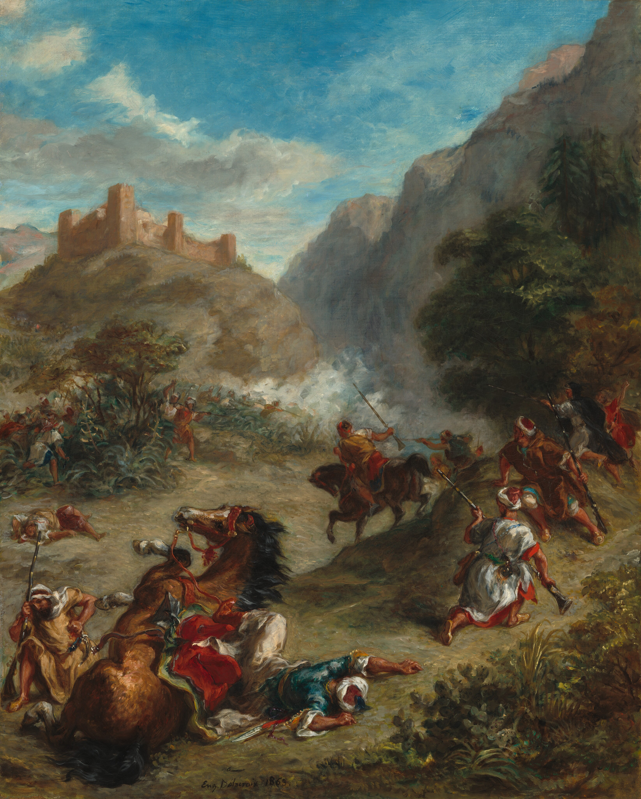

Ρομαντισμός (19ος Αιώνας)
Ανάλυση του έργου "Arabs Skirmishing in the Mountains"

Πηγή: National Gallery of Art, Washington.
Άδεια: Public Domain
Ο Ρομαντισμός έφερε την επανάσταση στην τέχνη, δίνοντας προτεραιότητα στο συναίσθημα και τη φαντασία. Το έργο του Ευγένιου Ντελακρουά, Arabs Skirmishing in the Mountains, αποτελεί κορυφαίο δείγμα του ρεύματος, αναδεικνύοντας τη δραματική κίνηση και το πάθος που χαρακτηρίζουν την εποχή.
Στον πίνακα αυτό, ο Ντελακρουά χρησιμοποιεί ζωντανά χρώματα και δυναμικές διαγώνιες γραμμές για να αποδώσει την ένταση της μάχης. Η στροφή προς "εξωτικά" θέματα και η έμφαση στην ατομική ελευθερία και το δράμα, αποτελούν κεντρικούς πυλώνες του Ρομαντισμού, προσφέροντας μια οπτική εμπειρία γεμάτη ενέργεια και συναισθηματική φόρτιση.